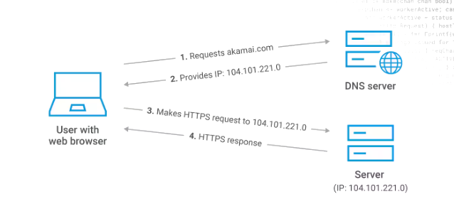

HTML
HTML (HyperText Markup Language) es el lenguaje estándar utilizado para crear y diseñar páginas web. Define la estructura y el contenido de una página web mediante el uso de etiquetas (tags), que indican cómo deben mostrarse los diferentes elementos, como textos, imágenes, enlaces y otros componentes multimedia. HTML es un lenguaje de marcado, lo que significa que utiliza etiquetas para "marcar" los elementos dentro del documento. Es fundamental para el desarrollo web y se utiliza en combinación con otros lenguajes como CSS (Cascading Style Sheets) para el diseño y JavaScript para la interactividad.
CSS
CSS (Cascading Style Sheets) es un lenguaje utilizado para describir la presentación y el diseño de una página web. Permite a los desarrolladores controlar la apariencia de los elementos HTML, incluyendo aspectos como colores, fuentes, márgenes, bordes, espaciado, disposición y animaciones. CSS trabaja junto con HTML para separar el contenido de la estructura de su presentación, lo que facilita el mantenimiento y la flexibilidad del diseño web. Además, con CSS se pueden crear diseños responsivos, adaptando la visualización de las páginas a diferentes dispositivos y tamaños de pantalla.
Volver al inicio
Pagina Web
Una página web es un documento digital accesible a través de Internet, generalmente escrito en HTML (HyperText Markup Language) y con estilo definido por CSS (Cascading Style Sheets). Las páginas web pueden incluir texto, imágenes, videos, enlaces, y otros elementos multimedia, y se visualizan mediante navegadores web. Cada página web tiene una URL (Uniform Resource Locator) única, que permite acceder a ella. Las páginas web pueden ser estáticas, mostrando el mismo contenido a todos los usuarios, o dinámicas, adaptando el contenido en función de interacciones o datos específicos. Forman la base de los sitios web y pueden estar vinculadas entre sí a través de hipervínculos.

Volver al inicio
Sito Web
Un sitio web es un conjunto de páginas web relacionadas y accesibles a través de una dirección web común, conocida como URL (Uniform Resource Locator). Los sitios web pueden tener diferentes propósitos, como proporcionar información, servicios, entretenimiento, comunicación, comercio electrónico, entre otros. Generalmente, un sitio web tiene una página principal (home page) que sirve como punto de entrada, y varias páginas adicionales conectadas a través de enlaces (hipervínculos). Los sitios web se almacenan en servidores web y son accesibles a través de navegadores de Internet. Pueden ser estáticos, con contenido que no cambia frecuentemente, o dinámicos, donde el contenido se actualiza regularmente y puede interactuar con los usuarios.

Volver al inicio
DNS
Los servicios DNS (Domain Name System) son fundamentales para el funcionamiento de Internet. El DNS es un sistema que traduce nombres de dominio legibles por humanos (como www.ejemplo.com) en direcciones IP numéricas (como 192.0.2.1) que los ordenadores utilizan para identificar y comunicarse entre sí. Sin el DNS, sería necesario recordar las direcciones IP exactas de cada sitio web que se desea visitar.
Volver al inicio
Direccion IP
Una dirección IP (Internet Protocol) es una cadena numérica única asignada a cada dispositivo conectado a una red que utiliza el Protocolo de Internet para la comunicación. Las direcciones IP permiten identificar y localizar dispositivos en la red, permitiendo la transmisión de datos entre ellos.

Volver al inicio
Navegador Web
Un navegador web es una aplicación de software que permite a los usuarios acceder, recuperar y visualizar contenido en la World Wide Web. Los navegadores web interpretan y renderizan el código HTML de las páginas web, permitiendo a los usuarios interactuar con el contenido multimedia, formularios, enlaces y otros elementos presentes en las páginas web. Entre los navegadores web más populares se encuentran Google Chrome, Mozilla Firefox, Microsoft Edge, Safari y Opera.
Volver al inicio
URL
Una URL (Uniform Resource Locator) es una dirección web que especifica la ubicación de un recurso en Internet. Es la forma estándar de referenciar recursos como páginas web, imágenes, videos, y otros archivos accesibles en la red. Una URL se compone de varios elementos, cada uno con una función específica para identificar y acceder al recurso deseado.
Volver al inicio
Hipertexto
El hipertexto es una estructura de datos que permite enlazar y acceder a distintos fragmentos de información, permitiendo a los usuarios navegar entre ellos de manera no lineal. A diferencia del texto convencional, el hipertexto incluye enlaces (también conocidos como hipervínculos) que conectan a otros documentos o a diferentes partes del mismo documento. Estos enlaces son usualmente destacables mediante colores, subrayado o cambio de cursor.

Volver al inicio
WWW
WWW (World Wide Web) es un sistema de información global que permite a los usuarios acceder a documentos y otros recursos en Internet mediante hipervínculos. La Web fue desarrollada por Tim Berners-Lee en 1989 y ha transformado la forma en que se accede y comparte información a nivel mundial. La WWW utiliza el protocolo HTTP (HyperText Transfer Protocol) para la transferencia de datos y se basa en la estructura de hipertexto para la organización de la información.
Volver al inicio
Internet
Internet es una red global de computadoras interconectadas que permite la comunicación y el intercambio de datos entre dispositivos de todo el mundo. Es una infraestructura que soporta una variedad de servicios, incluyendo la World Wide Web (WWW), correo electrónico, transferencia de archivos (FTP), mensajería instantánea y muchas otras aplicaciones.
Volver al inicio
Servidor Web
Un servidor web es un software y hardware que almacena, procesa y entrega páginas web a los usuarios a través de Internet. Cuando un usuario solicita una página web mediante un navegador, el servidor web responde entregando el contenido solicitado. Los servidores web utilizan el Protocolo de Transferencia de Hipertexto (HTTP) para comunicarse con los navegadores web y otros clientes.
Volver al inicio
Dominio
Un dominio es un nombre amigable y fácil de recordar que se utiliza para identificar una dirección IP en Internet. Los dominios permiten a los usuarios acceder a sitios web sin necesidad de memorizar complicadas direcciones numéricas. Cada dominio es único y se compone de varias partes separadas por puntos.
Volver al inicio
Evolucion de la red (1.0),(2.0),(3.0),(4.0)
La evolución de la red se ha caracterizado por varias etapas significativas, desde la Web 1.0 hasta las versiones más avanzadas que estamos viendo hoy.
Web 1.0 (1989-2005)
La Web 1.0, también conocida como la web estática, consistía en páginas web estáticas sin interactividad significativa. El contenido era principalmente informativo y los usuarios eran consumidores pasivos de la información.

Web 2.0 (2005-presente)
La Web 2.0, conocida como la web social, permitió la interacción y colaboración entre los usuarios. Surgieron las plataformas de redes sociales, blogs, wikis, y otras aplicaciones que permitían a los usuarios generar contenido.

Web 3.0 (emergente)
También conocida como la web semántica, la Web 3.0 busca hacer que los datos en la web sean comprensibles tanto para humanos como para máquinas. Utiliza inteligencia artificial, aprendizaje automático y procesamiento del lenguaje natural para interpretar y conectar datos de manera más inteligente.

Web 4.0 (futura)
Se especula que la Web 4.0 será la web ubicua o la web omnipresente, donde se espera una integración total de la tecnología en la vida diaria a través de dispositivos inteligentes y la Internet de las Cosas (IoT). La web será aún más inteligente y adaptativa, anticipándose a las necesidades de los usuarios y ofreciendo experiencias personalizadas.

Volver al inicio
Diseño web
El diseño web es el proceso de crear y organizar el contenido, la estructura y la apariencia de sitios web. Involucra una combinación de habilidades y disciplinas que abarcan desde el diseño gráfico hasta la programación y la experiencia del usuario. El objetivo principal del diseño web es proporcionar una experiencia de usuario positiva y efectiva, asegurando que los sitios web sean accesibles, atractivos y funcionales.

Volver al inicio
Backend
El backend es la parte de una aplicación o sitio web que se encarga de la lógica del negocio, el manejo de bases de datos y la comunicación con el frontend (la interfaz de usuario). Incluye el servidor, las aplicaciones, y la base de datos que procesan las solicitudes y envían respuestas al frontend. En términos simples, el backend se ocupa de todo lo que sucede "detrás de escena" para que una aplicación funcione correctamente.
Volver al inicio
Frontend
El frontend es la parte de una aplicación o sitio web que interactúa directamente con el usuario. Incluye todo lo que el usuario ve y con lo que interactúa, como el diseño, los botones, los formularios, y otros elementos visuales. Se construye utilizando tecnologías como HTML, CSS y JavaScript. El frontend se encarga de presentar la información de manera accesible y atractiva, y de manejar la interacción del usuario con la aplicación.
Volver al inicio
Frameworks
Los frameworks son plataformas de software que proporcionan una estructura y un conjunto de herramientas para desarrollar aplicaciones de manera más eficiente y estructurada. Facilitan y aceleran el desarrollo al ofrecer soluciones predefinidas para tareas comunes, permitiendo a los desarrolladores enfocarse en la lógica específica de su aplicación.
Volver al inicio
HTTP
HTTP es el protocolo estándar para la transferencia de datos en la web. Permite la comunicación entre navegadores web y servidores, pero los datos se transfieren en texto plano, lo que los hace vulnerables a interceptaciones.
Volver al inicio
HTTPS
HTTPS es una versión segura de HTTP. Utiliza cifrado SSL/TLS para proteger los datos durante la transferencia, asegurando que la comunicación entre el navegador web y el servidor sea segura y privada.
Volver al inicio
JavaScript
JavaScript es un lenguaje de programación interpretado que se utiliza principalmente para crear contenido web interactivo. Se ejecuta en el navegador del usuario, permitiendo la manipulación de elementos HTML y CSS, la creación de animaciones, y la gestión de eventos del usuario, como clics y teclas presionadas. JavaScript es fundamental para el desarrollo web moderno, habilitando funcionalidades dinámicas en sitios y aplicaciones web.
Volver al inicio
Php
es un lenguaje de programación de código abierto, ampliamente utilizado para el desarrollo web del lado del servidor. Permite crear contenido dinámico en sitios web, interactuar con bases de datos, gestionar sesiones de usuario y manejar formularios. PHP se integra fácilmente con HTML y se ejecuta en el servidor, enviando el contenido procesado al navegador del usuario. Es popular por su simplicidad, flexibilidad y amplio soporte en la comunidad de desarrolladores.
Volver al inicio